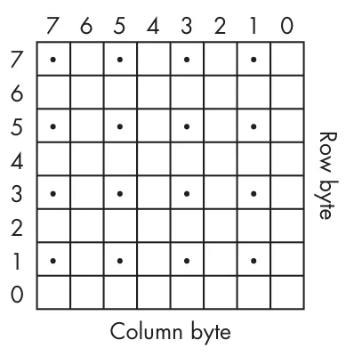
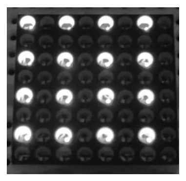

The purpose of this project is to demonstrate the use of the LED matrix; we’ll turn on every second column and row in the matrix, as shown in Figure 6-20.

To create this display pattern, we’ll send B10101010 to the rows shift register and ~B10101010 to the columns shift register. The 1s and 0s in each byte match the rows and columns of the matrix.
To create the effect shown in Figure 6-20, use the following sketch:
// Project 21 – Creating an LED Matrix
#define DATA 6 // connect to pin 14 on the 74HC595
#define LATCH 8 // connect to pin 12 on the 74HC595
#define CLOCK 10 // connect to pin 11 on the 74HC595
void setup()
{
pinMode(LATCH, OUTPUT);
pinMode(CLOCK, OUTPUT);
pinMode(DATA, OUTPUT);
}
void loop()
{
digitalWrite(LATCH, LOW);
shiftOut(DATA, CLOCK, MSBFIRST, ~B10101010); // columns
shiftOut(DATA, CLOCK, MSBFIRST, B10101010); // rows
digitalWrite(LATCH, HIGH);
do {} while (1); // do nothing
}The result is shown in Figure 6-21. We have turned on every other LED inside the matrix to form a checkerboard pattern.
